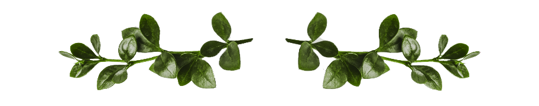

Corey & Joelle
October 1st, 2022
That day, she was amazed to discover that when he was saying "As you wish," what he meant was, "I love you." And even more amazing was the day she realized she truly loved him back.
- The Princess Bride

October 1st, 2022
Rounton Farm
10155 Rapidan Rd
Orange, VA 22960
Ceremony at 5 PM
Reception to follow

Corey and Joelle met when Joelle and her mom joined Hope Point Church back in 2019. They started as friends that shared a passion for Stardew Valley, but that changed when Corey asked the campus pastor for Joelle's number and invited her to coffee in Fall of 2020. Joelle was cautious at first due to some rough breakups in the past, but as they got to know each other she realized how understanding and kind Corey was and how well they meshed together. They officially started dating in November of 2020 and were engaged in July of 2021. They've been through some very difficult times together but have seen each other through it all. Now they are on their way to moving in together and have adopted a Great Dane as an addition to the little family Joelle has already started with her two Guinea Pigs. Corey and Joelle share a love that grows every day, even through the hardest times. They lean on each other when the going gets tough and share their joy in the good times as well. They are so excited to have their friends and family come together to be a part of their big day in October of 2022!